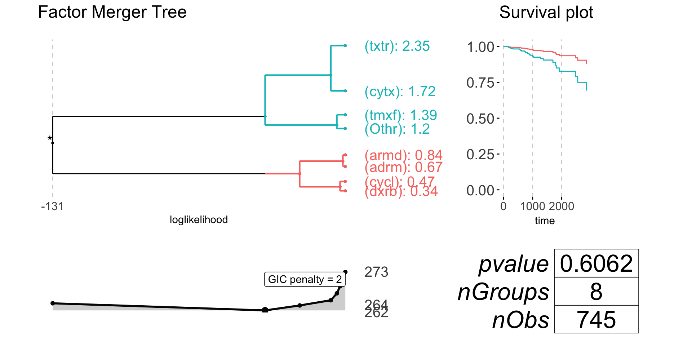
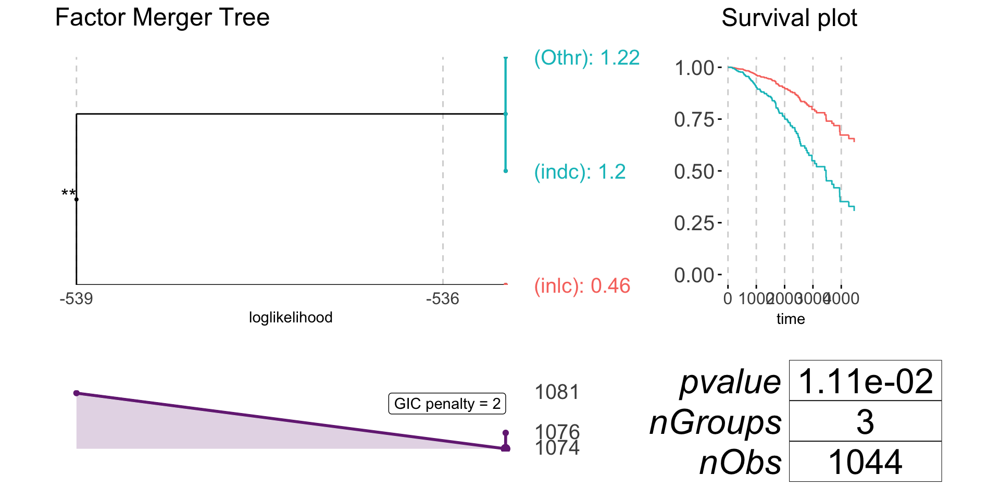
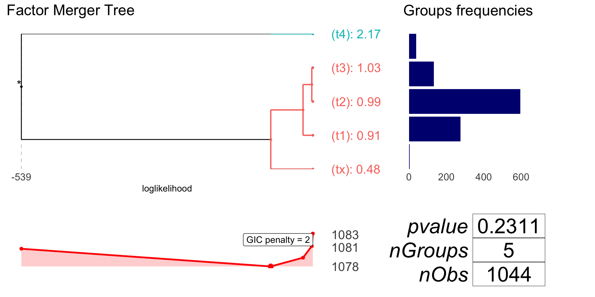

BRCA - the Cox regression merging
Agnieszka Sitko
2017-12-17
library(factorMerger)
library(survival)if (!require("forcats")) {
install.packages("forcats")
}
library(forcats)data("BRCA")Response - survival
brcaSurv <- Surv(time = BRCA$time, event = BRCA$vitalStatus)Factor
Drug name
drugName <- BRCA$drugName # drug name
drugName <- fct_lump(as.factor(drugName), prop = 0.05) drugNameFM <- mergeFactors(brcaSurv[!is.na(drugName)],
drugName[!is.na(drugName)],
family = "survival")
plot(drugNameFM, nodesSpacing = "effects", gicPanelColor = "grey2")
anova(coxph(brcaSurv[!is.na(drugName)] ~ drugName[!is.na(drugName)]))
#> Analysis of Deviance Table
#> Cox model: response is brcaSurv[!is.na(drugName)]
#> Terms added sequentially (first to last)
#>
#> loglik Chisq Df Pr(>|Chi|)
#> NULL -131.16
#> drugName[!is.na(drugName)] -128.44 5.4416 7 0.6062
anova(coxph(brcaSurv[!is.na(drugName)] ~ cutTree(drugNameFM)))
#> Analysis of Deviance Table
#> Cox model: response is brcaSurv[!is.na(drugName)]
#> Terms added sequentially (first to last)
#>
#> loglik Chisq Df Pr(>|Chi|)
#> NULL -131.16
#> cutTree(drugNameFM) -129.19 3.9493 1 0.04689 *
#> ---
#> Signif. codes: 0 '***' 0.001 '**' 0.01 '*' 0.05 '.' 0.1 ' ' 1Cancer subtype
subtype <- BRCA$histologicalType
subtype <- fct_lump(as.factor(subtype), prop = 0.05)
subtypeFM <- mergeFactors(brcaSurv[!is.na(subtype)],
subtype[!is.na(subtype)],
family = "survival")
plot(subtypeFM) 
Pathologic category
patCat <- BRCA$pathologicCategory %>% substr(1, 2)
patCatFM <- mergeFactors(brcaSurv[!is.na(patCat)],
patCat[!is.na(patCat)],
family = "survival")
plot(patCatFM, responsePanel = "frequency", gicPanelColor = "red")
anova(coxph(brcaSurv[!is.na(patCat)] ~ patCat[!is.na(patCat)]))
#> Analysis of Deviance Table
#> Cox model: response is brcaSurv[!is.na(patCat)]
#> Terms added sequentially (first to last)
#>
#> loglik Chisq Df Pr(>|Chi|)
#> NULL -539.39
#> patCat[!is.na(patCat)] -536.59 5.5993 4 0.2311
anova(coxph(brcaSurv[!is.na(subtype)] ~ cutTree(subtypeFM)))
#> Analysis of Deviance Table
#> Cox model: response is brcaSurv[!is.na(subtype)]
#> Terms added sequentially (first to last)
#>
#> loglik Chisq Df Pr(>|Chi|)
#> NULL -539.39
#> cutTree(subtypeFM) -534.89 8.9946 1 0.002708 **
#> ---
#> Signif. codes: 0 '***' 0.001 '**' 0.01 '*' 0.05 '.' 0.1 ' ' 1